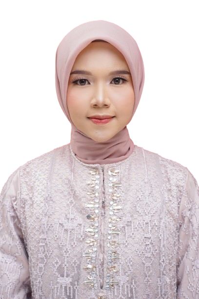

Ifaudinara Putri, S.Kom
Hi, I am Ifaudinara Putri, a Developer Web. I have a passion for Programming.
Ifaudinara Putri, S.Kom
I enjoy working with IT Staff on Programming. Feel free to browse my page to know more about my experiences.
Ifaudinara Putri, S.Kom
I am always eager to learn new things and take on challenges. Let's connect!